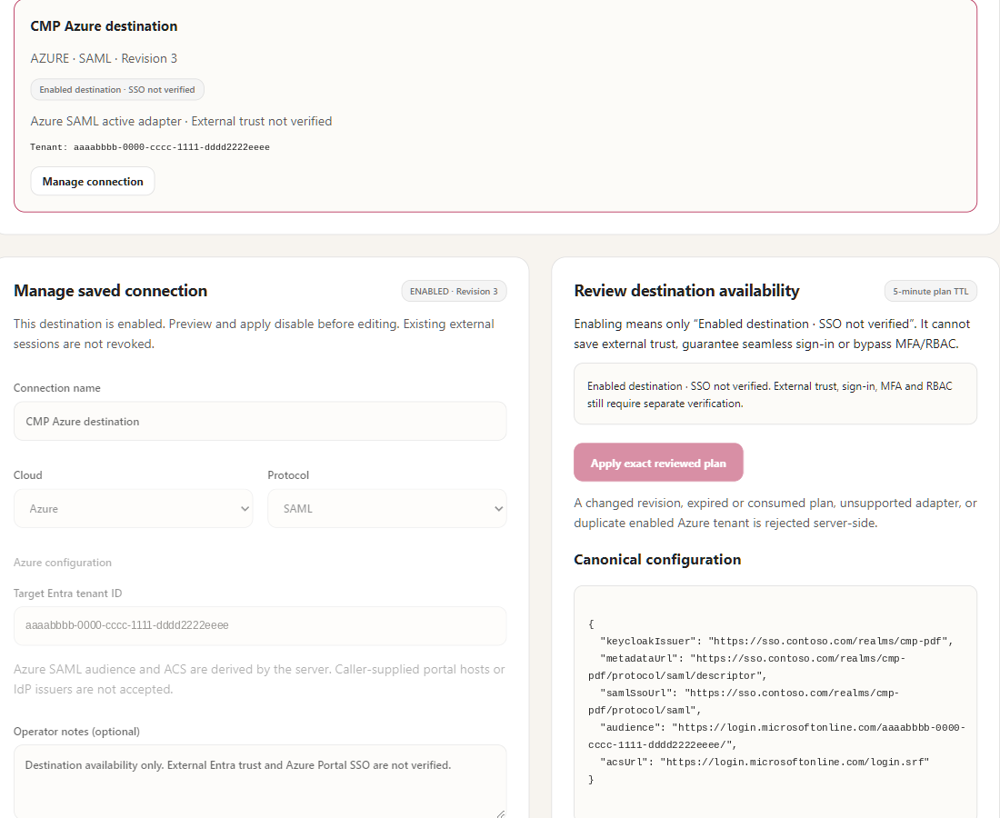
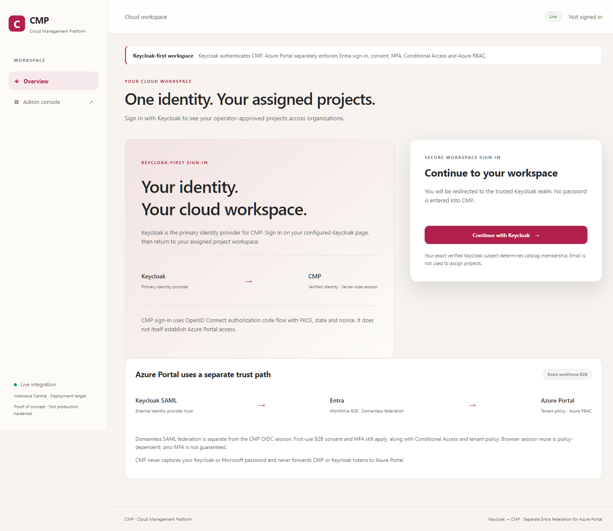
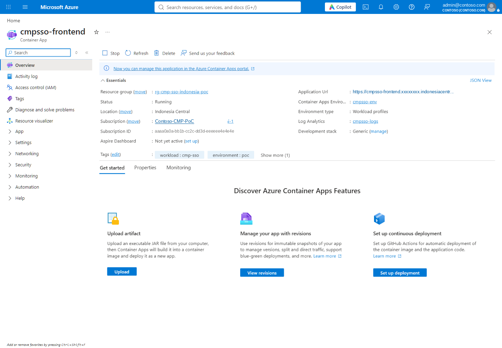

G7 · Integrate CMP: OIDC client, project catalog and destinations
How the CMP frontend uses Keycloak over OIDC with PKCE, binds people to projects by exact issuer and subject, and why an enabled Azure destination is not SSO.
Outcome#
The CMP frontend runs as a backend-for-frontend: it authenticates people with Keycloak, keeps tokens server-side, shows only projects where the exact issuer and subject are approved, and opens tenant-scoped Azure portal links. The separate admin backend records which Azure tenants are valid destinations — availability, not SSO.
Runtime configuration#
{ name: 'NODE_ENV', value: 'production' }
{ name: 'NODE_USE_SYSTEM_CA', value: '1' }
{ name: 'APP_MODE', value: 'live' }
{ name: 'APP_ROLE', value: 'frontend' }
{ name: 'PORT', value: '8080' }
{ name: 'IDENTITY_FLOW', value: 'keycloak-federation' }
{ name: 'KEYCLOAK_REALM', value: 'cmp-pdf' }
{ name: 'KEYCLOAK_CLIENT_ID', value: 'cmp-frontend' }
{ name: 'KEYCLOAK_URL', value: keycloakOrigin }
{ name: 'ENTRA_TENANT_ID', value: tenantId }
{ name: 'PUBLIC_ORIGIN', value: origin }
{ name: 'CMP_PROJECTS_JSON', value: projectsJson }
{ name: 'ADMIN_ORIGIN', value: adminOrigin }
{ name: 'CMP_CLOUD_REGISTRY', value: cloudRegistryMode }
{ name: 'DATABASE_URL', secretRef: 'cmp-database-url' }
{ name: 'SESSION_SECRET', secretRef: 'session-secret' }
{ name: 'KEYCLOAK_CLIENT_SECRET', secretRef: 'keycloak-client-secret' }
OIDC client code#
import * as oidc from 'openid-client';
import { fail } from './errors.mjs';
import { objectIdPattern } from './config.mjs';
export async function createOidc(config, provider = oidc, transport = globalThis.fetch) {
const issuer = new URL(config.issuer);
const trustedFetch = async (input, options = {}) => {
const url = new URL(input instanceof Request ? input.url : input);
if (url.origin !== issuer.origin || !url.pathname.startsWith(`${issuer.pathname}/`) || url.username || url.password) {
fail(502, 'Untrusted OIDC endpoint refused');
}
const response = await transport(input, { ...options, redirect: 'manual', signal: AbortSignal.timeout(10000) });
if (response.status >= 300 && response.status < 400) fail(502, 'OIDC endpoint redirect refused');
return response;
};
const options = provider.customFetch ? {
[provider.customFetch]: trustedFetch, timeout: 10,
execute: provider.enableNonRepudiationChecks ? [provider.enableNonRepudiationChecks] : []
} : undefined;
const client = await provider.discovery(issuer, config.clientId, config.clientSecret, undefined, options);
if (typeof client.serverMetadata === 'function') {
const metadata = client.serverMetadata();
if (metadata.issuer !== config.issuer) fail(502, 'Unexpected OIDC issuer');
for (const key of ['authorization_endpoint', 'token_endpoint', 'jwks_uri', 'userinfo_endpoint', 'end_session_endpoint']) {
if (!metadata[key]) continue;
const url = new URL(metadata[key]);
if (url.origin !== issuer.origin || !url.pathname.startsWith(`${issuer.pathname}/`)) fail(502, 'Unexpected OIDC endpoint');
}
}
return {
async start(session) {
const verifier = provider.randomPKCECodeVerifier();
session.oidc = {
verifier, state: provider.randomState(), nonce: provider.randomNonce(), createdAt: Date.now()
};
return provider.buildAuthorizationUrl(client, {
redirect_uri: `${config.origin}/auth/callback`, scope: 'openid profile email',
response_type: 'code', code_challenge: await provider.calculatePKCECodeChallenge(verifier),
code_challenge_method: 'S256', state: session.oidc.state, nonce: session.oidc.nonce
});
},
async callback(session, url) {
const pending = session.oidc;
delete session.oidc;
if (!pending || Date.now() - pending.createdAt > 10 * 60000) fail(400, 'Sign-in expired. Start sign-in again.');
if (url.origin !== config.origin || url.pathname !== '/auth/callback') fail(400, 'Unexpected callback URI');
let tokens;
try {
tokens = await provider.authorizationCodeGrant(client, url, {
pkceCodeVerifier: pending.verifier, expectedState: pending.state, expectedNonce: pending.nonce,
idTokenExpected: true
});
} catch { fail(401, 'Identity provider sign-in validation failed. Start sign-in again.'); }
const claims = tokens.claims();
if (!claims?.sub) fail(401, 'The identity provider did not return a verified subject');
// Only claims from the validated Keycloak ID token are displayed. No inferred Entra status.
return {
sub: claims.sub, name: typeof claims.name === 'string' ? claims.name : 'Authenticated user',
email: claims.email_verified === true && typeof claims.email === 'string' ? claims.email : null,
entraObjectId: typeof claims.entraObjectId === 'string' && objectIdPattern.test(claims.entraObjectId) ? claims.entraObjectId : null,
provider: 'Keycloak', authenticatedAt: Date.now()
};
}
};
}
| Defence | Where |
|---|---|
| Every discovered endpoint must be under the configured issuer; redirects refused | trustedFetch, serverMetadata() checks |
| PKCE S256 + state + nonce, 10-minute window, one-time use | start() / callback() |
| Exact callback origin and path | callback() |
Email shown only if email_verified === true | returned identity |
Issuer pinned to KEYCLOAK_URL + /realms/KEYCLOAK_REALM | config.mjs |
Azure destination registry (admin backend)#
For an Azure SAML destination the server derives the audience and ACS from the tenant ID — operators cannot type arbitrary portal hosts. Enabling a destination only makes it available in CMP and is always labelled Enabled destination · SSO not verified. AWS, other clouds and Azure OIDC stay draft-only.
audience: `https://login.microsoftonline.com/${item.configuration.tenantId}/`,
acsUrl: 'https://login.microsoftonline.com/login.srf'


Evidence#



